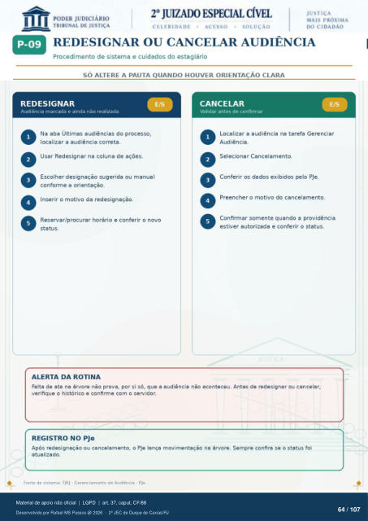

Transcrição automática em português, ainda não revisada. Confira grafia, prazos e termos jurídicos na imagem e no PDF antes de utilizar.
REDESIGNAR OU CANCELAR AUDIÊNCIA
Procedi mento de sistema e cuidados do estagiário
SÓ ALTERE A PAUTA QUANDO HOUVER ORIENTAÇÃO CLARA
REDESIGNAR
Audiência marcada e ainda não realizada Na aba Últimas audiências do processo,
localizar a audiência correta. Usar Redesignar na coluna de ações.
Escolher designação sugerida ou manual conforme a orientação.
Inserir o motivo da redesignaçáo. Reservar/procurar horário e conferir 0 novo
status.
ALERTA DA ROTINA
CANCELAR
Validar antes de confirmar Localizar a audiência na tarefa Gerenciar
Audiência. Selecionar Cancelamento.
Conferir os dados exibidos PJe. Preencher o motivo do cancelarnento.
Confirmar somente quando a providência estiver autorizada e conferir o status.
Falta de ata na árvore nao prova, por si só, que a audiência nao aconteceu. Antes de redesignar ou cancelar, verifique o histórico e confirme com o servidor.
REGISTRO NO PJe
Após redesignaçao ou cancelamento, o PJe lança movimentaçao na árvore. Sempre confira se o status foi atualizado.
Fonte de sistema: TJRJ - Gerenciamento de Audiência - PJo.
Ver também o infográfico original (página 64)
